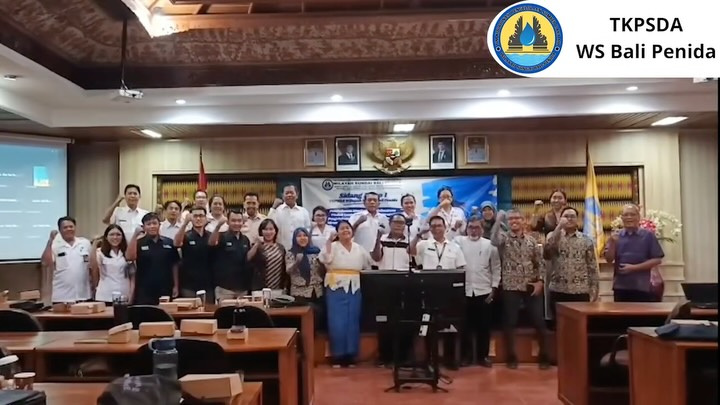

08
JUL 2026
Sidang
Baca Selengkapnya
Capaian Target dan Langkah Strategis PSIH3 pada Sidang Pleno I TKPSDA WS Bali Penida
TKPSDA WS Bali-Penida sukses menggelar Sidang Pleno I di Denpasar terkait monitoring dan tindak lanjut kebijakan PSIH3. Selain mengonfirmasi capaian program yang sesuai target, forum ini mendorong percepatan harmonisasi Ranpergub PSIH3 guna menjamin kepastian regulasi integrasi data dan tata kelola air yang transparan.